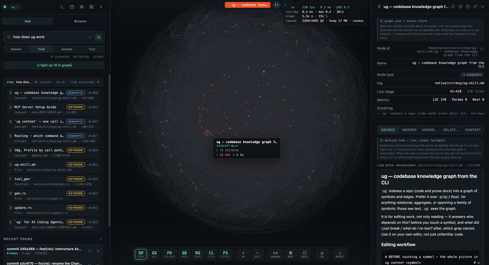
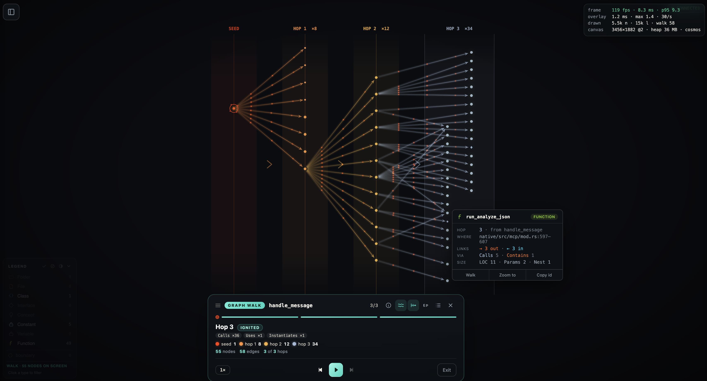
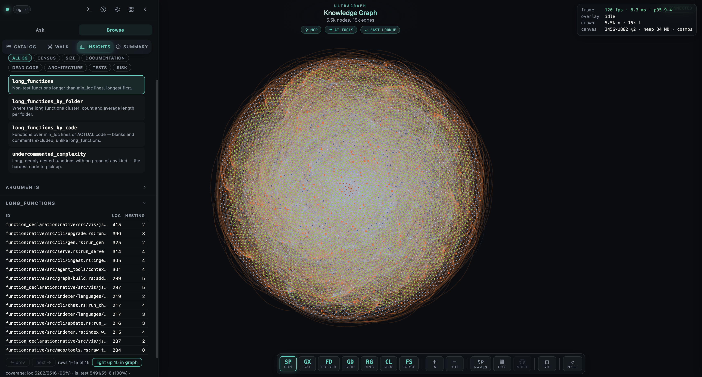

UltraGraph turns your codebase or documents into a queryable knowledge graph. Ask anything, and it walks the graph — not just one file — to hand you the context an answer actually needs.
Code is full of relationships — a function calls another, a class extends one, a file imports ten more. UltraGraph captures all of that, so answers come from real structure, not isolated chunks.
Files, symbols, and the relationships between them live in a single indexed graph. Nothing is pulled out of context.
When you ask a question, it walks outward from the relevant parts — surfacing the whole neighborhood an answer needs.
Runs on your machine in seconds. Pick up a repo or a document collection and ask meaningful questions immediately.
Point it at any project or document folder and ug does the rest.
ug scans your codebase, builds the graph, and embeds every node automatically. Cached, so re-runs are near-instant.
One local web app with a live graph view, a search bar, and a chat UI. No servers to configure.
Ask anything — "how does auth work?" — and get grounded, connected answers an agent can act on.
Fly a real indexed repo in your browser — then watch the two-minute walkthrough.
This is ug's own Rust engine, indexed by ug and published as a static snapshot — the same visualization the local server serves, on a real graph. Rotate it, filter by symbol type, focus a node and walk its callers.
Open the live demo →Runs entirely in your browser. Semantic search, chat, guided tours and whole-repo statistics read the index ug builds on your machine, so they're off in the demo — it says so where they'd appear.
file://. Open this folder with a local server to watch it right here.Everything you need to go from repo to reliable answers — without a knot of infrastructure.
ug context <symbol> returns its source, its callers with call sites, the tests that cover it, its dependencies and its linked docs — one token-budgeted bundle instead of five separate lookups. Every entry is labelled with why it's there, so you can drop half of it without asking again.
TypeScript, JavaScript, Python, Java, Rust, Markdown and PDF — all into one graph model.
A structure-guided walk that surfaces the whole neighborhood, not a single top-1 hit.
ug gen re-indexes only the files that changed — blake3-hashed and cached, so re-runs stay near-instant.
One binary ships the graph view, REST API and chat UI. Your code never leaves your machine.
Wildcards work wherever a symbol or file is named. ug find_usages 'validate_*' is the blast radius of every validator — one call, not one per validator.
Pass a plain name where an id is documented, batch ten lookups into one call, and page long files with --range 200-320. Less ceremony, less context burned.
Git hooks re-index on every commit, merge and rebase — and between commits, every structural answer tells you when the index has fallen behind the working tree, naming the files that drifted. A stale blast radius looks exactly like a correct one, so ug never lets one pass unannounced.
Claude, Cursor, Windsurf, Codex, Gemini — or any MCP client. ug installs the config, and the agent gets the whole graph as tools — tools that take wildcards, so “every handler” or “all the *Controller classes” is a single call instead of a loop.
The one an agent reaches for first is context. Point it at a symbol and it returns the whole neighbourhood in a single budgeted call — the source, the callers with their call sites, the tests that cover it, the dependencies, the linked docs — each labelled with the role that put it there. That's one round trip in place of the get_code → find_usages → traverse → test_for sequence an agent would otherwise run by hand, and one budget instead of four unbounded replies.
And it stays useful while the agent edits. ug connect --hooks also installs git hooks, so every commit, merge and rebase re-indexes what it touched. The agent asks who depends on this? before a change and what did I break, what do I re-test? after — and gets answers about the code it just wrote, not a snapshot from the last manual index. It can refresh mid-edit too, with ug update <file>… — and every structural answer says so on stderr when the index has fallen behind the tree, naming the files that drifted.
$ ug connect --mcp ✓ MCP server registered for cursor ✓ config → ~/.cursor/mcp.json ✓ the agent now sees the whole graph: context · search · analyze · find_usages … # “tell me everything about processPayment before I change it” $ context processPayment → code · 6 callers · 3 tests · 9 deps — 4.1k chars # “how many functions are longer than 50 lines?” $ analyze long_functions → 143 of 1162 (12.3%) # “what breaks if I change the validators?” $ find_usages validate_* → 9 symbols · 47 callers, with call sites # after the agent edits — the hooks kept the graph in step $ analyze diff_impact files=auth.ts,session.ts → 31 symbols · 4 endpoints affected $ analyze diff_retest_scope → 12 tests to re-run
Real screens and real output — the things you'll use every day.

Type a natural-language query and Hybrid Search hashes out the whole picture — not a single file. It blends vector and keyword retrieval, then walks the graph toward every part of the answer.

Pick any node, choose a radius, and the graph expands one hop at a time — edges stream outward and each frontier ignites in its own colour. It's the same walk agents use to traverse.

$ ug analyze long_functions ✦ U L T R A G R A P H · whole-repo statistics ✦ long_functions — non-test functions longer than min_loc lines, longest first. id loc nesting function:native/src/graph.rs:build_graph_from_index 721 8 function:native/src/serve.rs:run_serve 327 4 function:native/src/main.rs:run_upgrade 292 3 function:native/src/main.rs:run_chat 219 4 function:native/src/main.rs:ingest_graph_with_progr… 199 3 function:native/src/indexer.rs:index_with_cache 162 4 function:native/src/mcp/tools.rs:raw_tools 150 0 function:native/src/indexer/classifier.rs:classify_… 147 2 … (164 more) rows 1–20 of 172 → rerun with range "21-40" coverage · loc 2919/3048 (96%) · is_test 3032/3048 (99%) · max_nesting 2916/3048 (96%)
“How many methods are longer than 50 lines?” — a question that costs 500k tokens by grep-and-read is answered here in one call and about a hundred tokens. Counts, rankings, distributions and blast radius, over the graph ug already indexed.
Then point ug at any project and start asking questions in seconds.
$ curl -fsSL https://ultra-graph.web.app/install.sh | sh ✓ UltraGraph installed · type ug to begin
{kind=link}
{kind=link}